Практичний досвід · журнал «ДентАрт» 2022 №2
Ендодонтичне лікування в епоху пандемії COVID-19
Managing endodontic treatment in the COVID-19 era
Швидке поширення COVID-19 (SARS-CoV-2) по всьому світу з того часу, як хвороба була вперше виявлена наприкінці 2019 року в Ухані, Китай, призвело до далекосяжних наслідків і проблем для стоматологічної практики (Ather і співавт., 2020).
З огляду на характер стоматологічного прийому та стоматологічного середовища, співробітники стоматологічних служб, їх персонал схильні до високого ризику внутрішньолікарняної інфекції з ризиком стати переносниками захворювання та піддати пацієнтів перехресному інфікуванню з відповідними наслідками. Близькість стоматологів із зоною ротоглотки, вплив аерозолів (ВА) та неадекватні процедури інфекційного контролю — усе це фактори ризику, які слід враховувати (Peng і співавт., 2020).
У статті описано проблеми надання ендодонтичної допомоги пацієнтам під час пандемії COVID-19, починаючи з попередньої госпіталізації, прибуття, під час операції та після лікування, з метою завершення лікування за якомога меншу кількість відвідувань.
Розподіл пацієнтів
Незважаючи на те, що розподіл по телефону потрібний для оцінки стану здоров'я пацієнта з COVID-19, якому може знадобитися ендодонтичне лікування, він також є корисним інструментом для діагностики проблеми, щоб можна було уникнути особистого контакту, і після прибуття пацієнт міг одразу йти на лікування. Телефонне сортування також є корисним інструментом при плануванні візитів, оскільки нетермінова стоматологічна допомога може бути відкладена, щоб звільнити місце для невідкладної допомоги та час для пацієнтів, які справді потребують лікування.
У пацієнтів, які мають біль, можна визначити, чи є у них симптоми гострого пульпіту або апікального періодонтиту, — в обох випадках потрібне лікування. Хоча анальгетики та/або антибіотики можуть бути призначені по телефону, вони не можуть замінити лікування, коли пацієнт відчуває нестерпний біль.
Пам'ятайте, що гострий незворотний пульпіт призводить до некрозу пульпи, який, своєю чергою, веде до симптоматичного апікального періодонтиту.
Ствердні відповіді на більшість запитань у процесі розподілу по телефону означають, що ендодонтичне лікування необхідне і може бути призначена відповідна зустріч з достатнім часом, щоб позбавити пацієнта неприємностей або, що ще краще, завершити лікування.
Очікується, що пацієнти із симптоматичним незворотним пульпітом становитимуть основну частину невідкладних випадків ендодонтичного лікування, як це було в Ухані, Китай. Пульпотомія може бути дуже ефективною у боротьбі із симптомами пульпіту (Hasselgren і Reit, 1989), але оскільки неможливо передбачити ступінь запалення апікальної пульпи, єдиним передбачуваним підходом до незворотного пульпіту буде повна екстирпація пульпи (Gatewood і співавт., 1990).
Якщо пацієнт не може бути оглянутий вчасно, можуть бути призначені анальгетики та/або антибіотики для полегшення болю до початку лікування. Британське ендодонтичне товариство рекомендувало підхід AAA (рекомендації, анальгетики та антибіотики) для полегшення болю до початку лікування, суть якого така:
Анальгетики
- Ібупрофен 400 мг по одній таблетці чотири рази на день.
- За відсутності реакції — ібупрофен 600 мг чотири рази на день до максимальної дози 2,4 г на день.
- Через дві години парацетамол 500 мг дві таблетки чотири рази на день.
Антибіотики
- Аугментин 375 мг, TDS п'ять днів.
- Кліндаміцин 150 мг, QDS п'ять днів при алергії на пеніцилін.
Пацієнтам із симптомами пульпіту не слід призначати антибіотики. Анальгетики можуть допомогти на короткий час, але антибіотики нічого не роблять і створюють стійкість на майбутнє (Sukumar і співавт., 2020). Чим раніше пацієнт розпочне лікування, тим краще. Пацієнтам слід рекомендувати не приймати будь-які анальгетики до візиту (по можливості за шість-вісім годин), оскільки це може ускладнити підтвердження діагнозу і таким чином затримати термінове лікування та даремно витратити на нього час, який можна було б віддати комусь іншому.
При діагностуванні гострого апікального абсцесу можна розглянути можливість призначення антибіотиків, але немає заміни екстирпації пульпи та розрізу для дренування при флуктації абсцесу.
Прихід пацієнта
Передбачається, що всі стоматологи-клініцисти поінформовані про національні рекомендації щодо прийому пацієнтів у практиці, а також про стандартні заходи контролю і захисту від інфекцій (IPC), необхідні для лікування пацієнтів, та правильне використання засобів індивідуального захисту (PPE).
Стандартні заходи включають перевірку температури, гігієну рук, підтвердження статусу COVID-19, електронні платежі, заздалегідь зроблені, носіння масок і соціальне дистанціювання. Пацієнтів слід просити приходити без супроводу.
Екран для мікроскопа
Більшість ендодонтистів та багато стоматологів загального профілю використовують стоматологічний операційний мікроскоп. Переваги збільшення численні і добре задокументовані (Carr і Murgel, 2010). Працюючи з мікроскопом, клініцисти особливо вразливі і досяжні для бризок від хмари потенційно інфікованого аерозолю. Лицьові щитки або захисні окуляри, одягнені для захисту очей, не підходять для роботи з мікроскопом, оскільки можуть не тільки запітніти, а й призводити до втоми очей через неправильне розташування щодо бінокулярів. Крім того, оскільки лікар не може через це працювати досить близько до мікроскопа, зображення або спотворюється, або зменшується у розмірі, що, у свою чергу, може перешкоджати рухам рук.
Рішенням є універсальний екран для мікроскопа, який можна встановити на будь-який мікроскоп. Ергономічний та естетичний екран, що його розробив ендодонтист доктор F. Micah Nuzum (Огайо, США), є ідеальним вирішенням проблеми. Екран, прикріплений до бінокуляра, створює фізичний бар'єр між лікарем і пацієнтом та забезпечує плавну інтеграцію, чіткий зір і оптимальний захист під час роботи з мікроскопом (www.shieldont.com). Екран доступний як для ендодонтиста, так і асистента (фото 1 a — в).
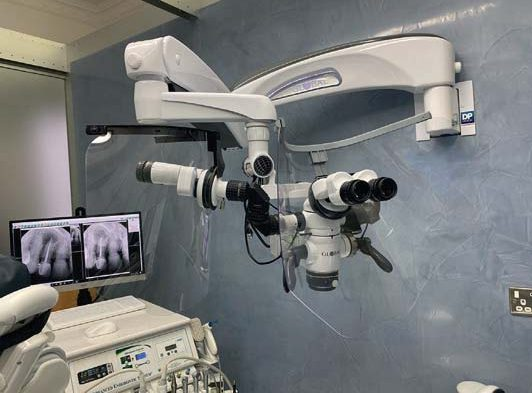
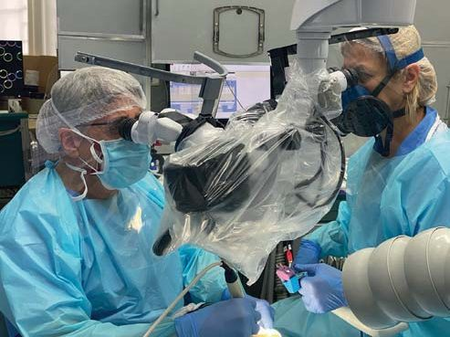
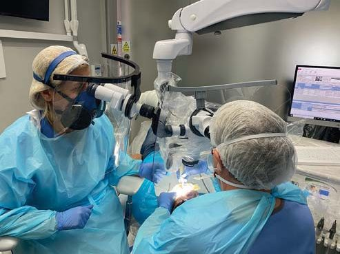
В особистому повідомленні панамського ендодонтиста доктора Хуана Карлоса Ортіса Хьюга, світового лідера в галузі ергономіки мікроскопів, ідеться, що Shieldont забезпечує такі переваги:
- Чітке поле зору.
- Безперешкодний периферійний зір.
- Безперешкодна передача інструментів між оператором і помічником.
- Оператор зберігає нейтральну робочу позицію.
- Розміри екрану по периметру дозволяють уникнути непотрібних рухів.
- Менше навантаження на шию оператора.
- Зберігається нейтральне положення рук.
- Екрани прості в установці та очищенні.
- Не порушується доступ до елементів керування мікроскопом.
Рентгенограми під час операції
Інтраоральні рентгенограми гарної якості — невід'ємна частина ендодонтичного діагнозу. Правильно розташовані позиціонери (фото 2 а, б) забезпечують неспотворені зображення діагностичної якості і зменшують потребу в дублюванні знімка (фото 3). Що ще важливіше, плівка (переважно цифрова) при правильному розміщенні в роті забезпечить комфорт пацієнту, запобігатиме кашлю та блювотним нападам із супутніми потенційно інфікованими бризками слини. У межах хірургічного втручання слід розглядати КПКТ малого поля.
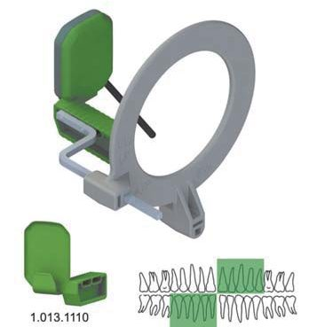
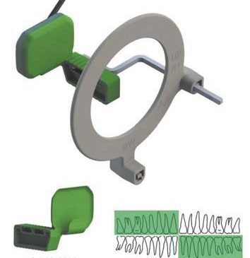
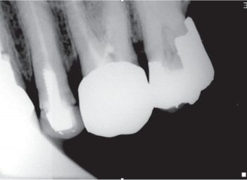
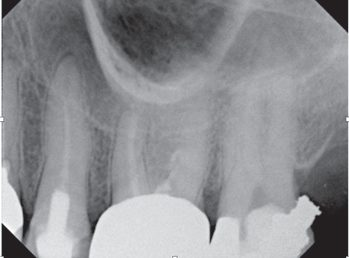
Анестезія
Глибока анестезія — обов'язкова умова екстреної ендодонтичної допомоги, особливо під час роботи з «гарячим» зубом. Робота за умов «нової реальності» досить напружена. До того ж, коли анестезії недостатньо, прийом може перетворитися на муку як для пацієнта, так і для стоматолога.
Для зубів верхньої щелепи потрібна як щічна, так і піднебінна інфільтрація. Артикаїн є доцільним розчином анестетика. Використовуйте безпечні та зручні технічні ін'єктори, такі як Wand STA (Milestone Scientific) або новий Dentapen (Septodont) (фото 4 а, б).
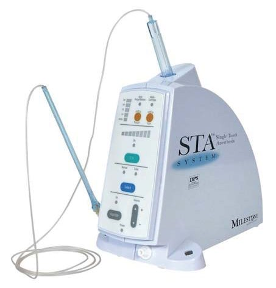
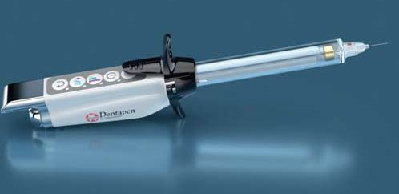
Для ін'єкцій у нижню щелепу краще обрати лігнокаїн, ніж артикаїн. Ефективніша анестезія за Gow-Gates, ніж мандибулярна (Haas, 2011), оскільки це забезпечує глибоку анестезію всіх гілок нижньощелепного відділу трійчастого нерва.
Додаткова щічна інфільтрація артикаїном, особливо під час роботи з нижнім моляром, повинна додатково посилити анестезію пульпітного зуба (Kanaa і співавт., 2009). Ін'єкцію періодонтальної зв'язки також слід розглядати як додаткову ін'єкцію і для верхньощелепної та нижньощелепної анестезії. Внутрішньопульпарні ін'єкції — це крайній захід, зі співчуттям і турботливою рукою на плечі (фото 5).
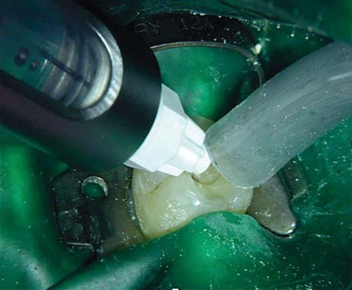
Рабердам
Незважаючи на те, що кожен клініцист розуміє обов'язковість ізоляції рабердамом в ендодонтії, його використання під час пандемії COVID-19 не можна переоцінити — через зниження контамінації навколишнього середовища слиною та кров'ю (Azim і співавт., 2020). Правильно встановлений рабердам може знизити утворення аерозолів із ротової порожнини на 90% (Cochran, 1989), а рівень мікроорганізмів — на 98% (Samaranayake і співавт., 1989). В ідеалі завіса має закривати як ніс, так і рот пацієнта.
Розміщення клампа з крилами в рабердамі, позиціонування рамки та накладання всієї зібраної конструкції безпосередньо на зуб зменшують кількість етапів і, отже, утворення аерозолю, а також виконуються дуже швидко (фото 6 а — в). Іноді потрібен герметик, щоб забезпечити достатню ізоляцію та запобігти підтіканню слини, наприклад, Oraseal (Ultradent) (фото 6 г). Використання рабердаму в поєднанні з потужною аспірацією (HVS) значно знижує поширення аерозолю і забруднення (Harrel і Molinari, 2004).
Крім того, система очищення повітря з фільтром HEPA також знижує рівень потенційно небезпечного біоаерозолю розміром до 0,3 мікрона, створюючи безпечніше робоче середовище (Hallier і співавт., 2010).
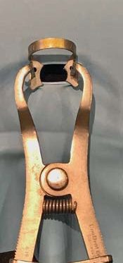
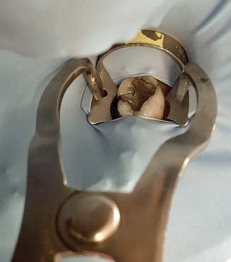
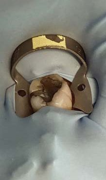
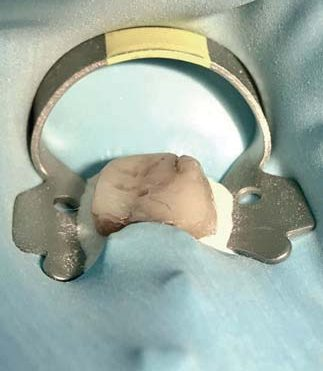
Ультразвук
Використання ультразвуку при процедурах гігієни ротової порожнини (Singh і співавт., 2016) викликало серйозні побоювання з приводу утворення забрудненого аерозолю та високого ризику інфікування під час нинішньої пандемії. Ультразвук широко використовується у традиційній ендодонтії для модифікації порожнини доступу, видалення дентиклів, а також локалізації кальцифікованих і важкодоступних каналів. Ультразвук також використовується для видалення зламаних інструментів (фото 7).
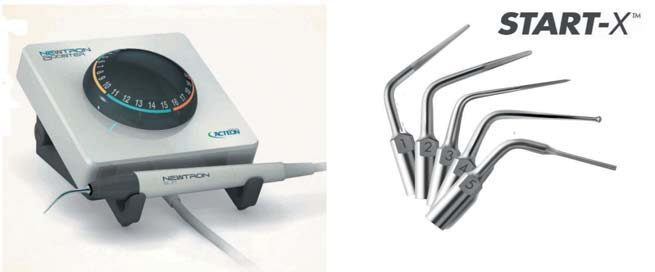
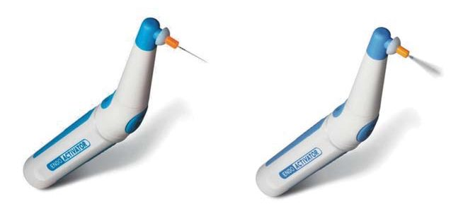
Слід задати запитання: чи потрібно обмежити або повністю припинити використання ультразвуку під час ендодонтичної процедури, щоб уникнути ризику розбризкування та розповсюдження аерозолів? Маємо враховувати такі допуски:
- Ультразвук використовуватиметься з великим об'ємом аспірації і в основному обмежується твердими тканинами зуба, а не органічними тканинами пульпи (потенційно забрудненими).
- Використання ультразвуку в ендодонтії обмежене створенням доступу, який є першим етапом лікування.
- Осадження аерозолю має бути в межах рекомендованого часу для знезараження задовго до завершення ендодонтії.
- Якщо використання ультразвуку завершується за годину до закінчення лікування, цілком можливо, що операційне очищення і дезінфекція можуть розпочатися після того, як пацієнт залишить процедурний кабінет, та після мінімального рекомендованого часу очікування 10 хвилин.
Використання однофайлової системи препарування
Блискуче описані професором Гербертом Шильдером (1974) механічні і біологічні цілі формування кореневих каналів залишаються незмінними. Формування каналів у сучасну епоху має бути ефективним, дієвим, простим та безпечним. Реципрокні однофайлові нікель-титанові інструменти мають ці переваги одночасно з простотою і безпекою — у порівнянні із системами, що обертаються (Coelho і співавт., 2018).
Один файл, який швидко формує канал по всій довжині, дозволяє іригаційному розчинові гіпохлориту натрію бути максимально ефективним, розчиняючи тканини пульпи, дезінфікуючи і знищуючи мікроорганізми по всій системі кореневих каналів (Bronnec і співавт., 2010). Ефект іриганту також може бути посилений на цьому етапі звуковим ендоактиватором (Dentsply Sirona) (фото 8) або мануальною динамічною активацією з добре адаптованим гутаперчевим штифтом, обрізаним на 2 мм коротше, ніж робоча довжина, який активно вводиться в канал протягом хвилини в 17% розчин ЕДТА або NaOCl (Caron і співавт., 2010).
Звукова та/або ручна активація іриганту наприкінці процедури формування нині не вважається небезпечним аерозоль-генеруючим впливом. Швидке формування каналу дозволяє приділити додатковий час активації іригації та тривимірній дезінфекції системи кореневих каналів.
Ендодонтія за один візит
Ендодонтію за один візит слід розглядати, коли клініцист упевнений, що біологічні та механічні завдання виконані на найвищому рівні. Це може бути зроблено, коли дозволяє час, гутаперчевий штифт добре адаптований, а канал сухий.
Лікування за один візит знижує кількість відвідувань пацієнта і потенційний ризик зараження COVID-19 внаслідок подальшого впливу аерозолів. В ендодонтії немає жодної різниці в результатах одно- та багаторазових відвідувань (Sathorn і співавт., 2005).
Коли лікування не може бути завершене за один візит, у каналі слід залишити антибактеріальний препарат гідроксиду кальцію з герметичною тимчасовою реставрацією, такою як IRM (Dentsply Sirona) або СІЦ, доки пацієнт не буде призначений для фінальної обтурації. В ідеалі, якщо лікування завершено, слід відновити куксу, щоб забезпечити основу для коронки і зберегти якість пломби, а також ще більше скоротити час, що витрачається на маніпуляції (Southard, 1999). Не забудьте перевірити прикус і за необхідності адаптувати пломбу. Жоден зуб не приживеться, якщо реставрація завищуватиме прикус (Rosenberg і співавт., 1998).
Післяопераційне знеболювання
Справедливо припустити, що коли пацієнт звернувся з болем, то, ймовірно, він матиме певний ступінь післяопераційного болю і після лікування, незалежно від того, завершене воно за одне чи кілька відвідувань (Pak і White, 2011). Це слід пояснювати як потенційну можливість.
Упоратися з болем можна за допомогою ібупрофену, парацетамолу або їх комбінації. Дексаметазон, кортикостероїди можуть бути призначені протягом трьох днів, щоб значно зменшити біль при запаленні. Дуже ефективні 4 мг після процедури, а також 2 мг щодня протягом двох наступних днів. Антибіотики слід розглядати лише тоді, коли пацієнт має системні прояви. Якщо всі канали сформовані, очищені та зроблено розріз для дренування, що усуває причину проблеми, антибіотики не будуть потрібні.
Протоколи лікування
Як уже говорилося, лікування кореневих каналів під збільшенням і освітленням забезпечить консервативний доступ до порожнини для збереження якомога більшої кількості тканин зуба, що залишилися, а також найкращу можливість локалізації всіх каналів.
За даними Стропка (1990), 93% перших верхніх молярів мають чотири канали. Формування лише трьох каналів, коли їх чотири, веде до невдачі. Пандемія — не пора для ендодонтичних невдач і пов'язаних із цим проблем (фото 9).
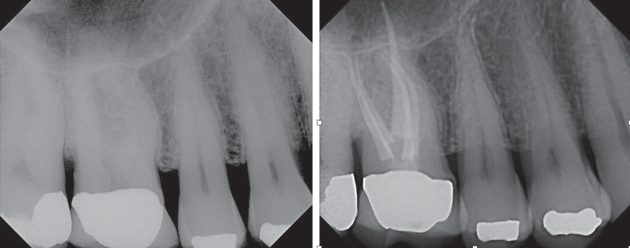
Перед місцевою анестезією та накладанням рабердаму багато клініцистів роблять передопераційне ополіскування рота 1-1,5% перекисом водню або 0,2% повідон-йодом протягом однієї хвилини, щоб знизити вірусне навантаження, хоча доказова база цього недосконала (Vergara-Buenaventura і Castro-Ruiz, 2020). Для знезараження операційного поля слід використовувати гіпохлорит натрію.
Вплив аерозолю переважно обмежується зоною доступу до порожнини зуба під час ендодонтичних втручань. Очікується, що цей етап буде завершено приблизно за 30-45 хвилин до закінчення формування каналу і навіть більше, якщо передбачається завершення лікування із фінальною обтурацією. Підвищувальний або турбінний наконечник можна використовувати, тільки застосовуючи інтенсивну аспірацію великого об'єму. При застосуванні на цьому етапі пустера «три в одному» для видалення ошурків, а також ультразвуку клініцист повинен почуватися в безпеці, знаючи, що вони використовувалися задовго до закінчення лікування і не вплинули на тривалість очікування для хірургічної підготовки перед наступним пацієнтом.
Біомеханічне препарування
Я вважаю, що найпростіша однофайлова система зі зворотно-поступальним рухом, доступна нині, — це WaveOne Gold (Dentsply Sirona). Вона складається з чотирьох файлів, доступних для ефективного вирішення широкого спектру ендодонтичних проблем у повсякденній практиці (фото 10). Геометрія, конструкція, сплав та інструкція для використання добре описані (Webber, 2015).
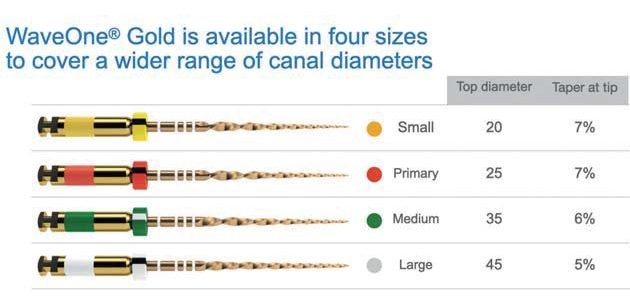
Після отримання відтворюваної килимової доріжки за допомогою К-файла розміру .10 для розширення килимової доріжки використовується реципрокно-поступальний інструмент WaveOne Gold Glider. Після цього канал може бути оптимально сформований за допомогою WaveOne Gold Primary (25/07) (фото 11).
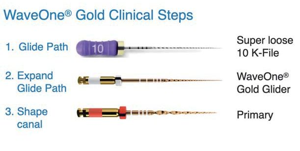
У 80% випадків це можна виконати за допомогою WaveOne Gold Primary, проте в деяких випадках вимірювання за допомогою ручних файлів або огляд витків інструмента на наявність ошурків визначає, чи потрібен файл Medium або Large. Крім того, коли файл Primary не просувається, використовується файл Small за одне або кілька введень до досягнення робочої довжини, а потім використовується файл Primary на робочу довжину (фото 12).
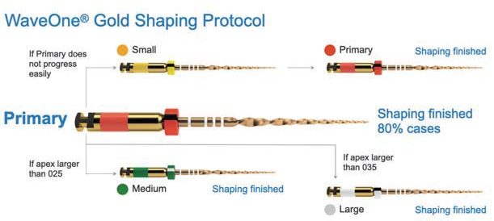
Нікель-титанові інструменти WaveOne Gold разом з протоколами тривимірної дезінфекції, що раніше обговорювалися, — це ідеальне біомеханічне рішення для будь-якої екстреної ендодонтичної ситуації, особливо під час нинішньої пандемії COVID-19.
Обтураційні рішення
Після висушування каналів паперовими штифтами слід використовувати матеріали і методи обтурації, яким надає перевагу лікар. Кінцевою метою є тривимірна обтурація системи кореневих каналів (Ruddle, 1992) (фото 13 a — г).
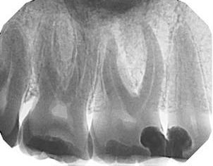
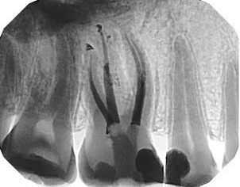
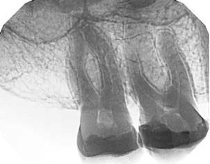
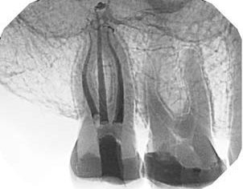
Дії під час травми
Переломи, вивихи та рухливість створюють свої особливі проблеми з веденням таких пацієнтів, і вони ще складніші у лікуванні під час пандемії. Рекомендується, щоб пацієнтів з цими типами невідкладних станів, які здебільшого спостерігаються у підлітків, направляли до ендодонтиста або дитячого стоматолога. Dental Trauma UK і Британське товариство дитячої стоматології випустили рекомендації щодо лікування травматичних ушкоджень та подальшого догляду під час пандемії COVID-19 (Dental Trauma UK і BSP, 2020). Якщо із самого початку ці випадки лікувати неправильно, очікуються погані довготермінові результати.
Висновки
Після аналізу літератури, дотримання рекомендацій щодо вентиляції, часу очікування та пом'якшення наслідків при стоматологічних операціях (SDCEP, 2020) ендодонтію, безумовно, слід вважати відносно безпечною щодо аерозолів під час нинішньої пандемії COVID-19.
Нині клініцисти не повинні боятися ендодонтичного втручання у своїх пацієнтів. Коли стоматологи й ендодонтисти повернуться до роботи, невідкладна допомога становитиме більшість їхніх маніпуляцій. Жоден пацієнт не повинен бути оглянутий без адекватної оцінки ризику, дотримання місцевих стандартних заходів IPC і лікаря, що носить відповідні та рекомендовані засоби індивідуального захисту.
Розуміння біологічних і механічних цілей ендодонтії, використання рабердаму в поєднанні з потужною аспірацією, адекватної анестезії, розуміння ролі вентиляції — майже всі аерозоль-генеруючі впливи повинні завершуватися задовго до припинення лікування, тож ведення пацієнтів та лікування не повинні відрізнятися від того, як це було до COVID-19. Якісне ендодонтичне лікування забезпечує довготермінове збереження зубів. Не можна допустити, щоб COVID-19 завадив досягненню цієї мети.
Література
- Ather A., Patel B., Ruparel N. B., Diogenes A., Hargreaves K. M. (2020). Coronavirus Disease 19 (COVID 19): Implications for Clinical Dental Care. J Endod 46: 584-595.
- Peng X., Xu X., Li Y., Cheng L., Zhou X., Ren B. (2020). Transmission routes of 2019-n CoV and controls in dental practice. Int J Oral Sci 12, 9.
- Faculty of General Dental Practice (UK) and College of General Dentistry (2020). Implications of COVID-19 for the safe management of general dental practice: A practical guide. Version 2. October. www.fgdp.org.uk
- Yu J., Zhang T., Zhao D., Haapasalo M., Shen Y. (2020). Characteristics of endodontic emergencies during COVID-19 pandemic outbreak in Wuhan. J Endod 46:730-735.
- Public Health England (2020). COVID-19: infection prevention and control guidance.
- Hasselgren G., Reit C. (1989). Emergency pulpotomy: pain relieving effect with and without the use of sedative dressings. J Endod 15: 254-6.
- Gatewood R. S., Himmel V. T., Dorn S. O. (1990). Treatment of the endodontic emergency: a decade later. J Endod 16:284-91.
- British Endodontic Society (2020). Diagnosis and management of endodontic emergencies, a British Endodontic Society position paper.
- Sukumar S., Martin F. E., Hughes T. E., Adler C. J. (2020). Think before you prescribe: how dentistry contributes to antibiotic resistance. Aust Dent J 65:21-29.
- Carr G., Murgel C. A. F. (2010). The use of the operating microscope in endodontics. Dent Clin North Am 54:191-214.
- Hugues J. C. O. Personal communication. 2020. Endodontist, David, Panama.
- Haas D. A. (2011). Alternative mandibular nerve block techniques. J Am Dent Assoc 142 Suppl:8-12.
- Kanaa M. D., Whitworth J. M., Corbett I. P., Meehan G. (2009). Articaine buccal infiltration enhances the effectiveness of lidocaine inferior alveolar nerve block. Int Endod J 42:238-46.
- Azim A. A., Shabbir J., Khurshid Z., Zafar M. S., Ghabbani H. M., Dummer P. M. H. (2020). Clinical endodontic management during the COVID-19 pandemic: a literature review and clinical recommendations. Int Endo J.
- Cochran M. A., Miller C. H., Sheldrake M. A. (1989). The efficacy of the rubber dam as a barrier to the spread of microorganisms during dental treatment. J Am Dent Assoc 119:141-4.
- Samaranayake L. P., Reid J., Evans D. (1989). The efficacy of rubberdam isolation in reducing atmospheric bacterial contamination. ASDC J Dent Child. 56:442-4.
- Harrel S. K., Molinari J. (2004). Aerosols and splatter in dentistry. J Am Dent Assoc 135: 429-437.
- Hallier C., Williams D., Potts A., Lewis M. A. O. (2010). A pilot study of bioaerosol reduction using an air cleaning system during dental procedures. Br Dent J 209:E14.
- Scottish Dental Clinical Effectiveness Programme (2020). Mitigation of aerosol generating procedures in dentistry. SDCEP.
- Singh A., Shiva Manjunath R. G., Singla D., Bhattacharya H. S., Sarkar A., Chandra N. (2016). Aerosol, a health hazard during ultrasonic scaling. Indian J Dent Res 27:160-2.
- Schilder H. (1974). Cleaning and shaping the root canal. Dent Clin North Am 18:269-96.
- Coelho M. S. et al (2018). Separation of nickel-titanium rotary and reciprocating instruments: A mini review of clinical studies. Open Dent J 12:864-872.
- Bronnec F., Bouillaguet S., Machtou P. (2010). Ex vivo assessment of irrigant penetration and renewal during the final irrigation regime. Int Endod J 43:663-72.
- Caron G., Nham K., Bronnec F., Machtou P. (2010). Effectiveness of different final irrigate activation protocols on smear layer removal in curved canals. J Endod 36:1361-6.
- Sathorn C., Parashos P., Messer H. H. (2005). Effectiveness of single-versus-multiple endodontic treatment of teeth with apical periodontitis. Int Endod J 38:347-55.
- Southard D. W. (1999). Immediate core build up of endodontically treated teeth: the rest of the seal. Pract Periodontics Aesthet. 11:519-26.
- Rosenberg P. A., Babick P. J., Schertzer L., Leung A. (1998). The effect of occlusal reduction on pain after endodontic instrumentation. J Endod 24:492-6.
- Pak J. G., White S. N. (2011). Pain prevalence and severity before, during and after root canal treatment: A systematic review. J Endod 37:429-438.
- Stropko J. J. (1999). Canal morphology of maxillary molars: Clinical observations of canal configurations. J Endod 25:446-50.
- Vergara-Buenaventura A., Castro-Ruiz C. (2020). Use of mouthwashes against COVID-19 in dentistry. Br J Oral Maxillofac Surg 58:924-27.
- Webber J. (2015). Shaping canals with confidence: WaveOne GOLD single file reciprocating system. International Dentistry 6:6-17.
- Ruddle C. J. (1992). Three dimensional obturation of the root canal system. Dentistry Today 11:28-33.
- Dental Trauma UK and British Society of Paediatric Dentistry (2020). Permanent dentition acute management of traumatic injuries and follow-up care during the COVID-19 pandemic.
Практичні курси сучасної ендодонтії у Навчальному центрі «Аполлонія»
Курс ендодонтії